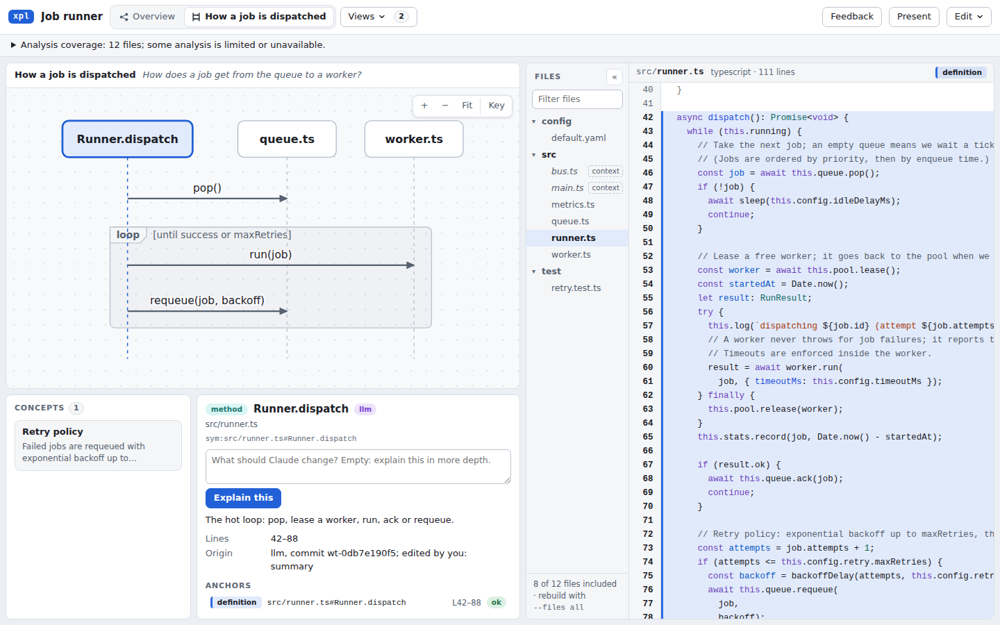

Follow the idea. Find the code.
A diagram you can check against the code.
xpl is a code explainer with diagrams linked both ways to the source, and every claim checked against your repository.
Click a box. See the code.
Put the cursor in the code. The diagram lights up too.

This is the TypeScript job runner included with xpl, built into a single HTML file. Download it and open it offline.
From repository to explanation
The agent writes.
xpl checks.
The checks verify source locations and freshness. The author still has to get the explanation right.
-
Index the repository
xpl finds files, symbols and references. References say whether they come from a precise tool or a heuristic.
-
The agent writes a patch
You ask a question. The agent adds diagrams, short explanations and anchors to the code.
-
xpl checks every claim
Each anchor must resolve to real code. Changed or missing source links block a ready export.
-
Read it. Share it.
Explore the diagrams beside the source, follow a guided tour, or export one HTML file with the code inside.
Try it on your repository
Start with a question.
Install from npm with Node 22.12 or newer. You can also build from source with access to the private repository.
Source and installation notes (private repository, access required)Install the CLI and authoring skill:
npm install --global @krimvp/xpl
xpl skill installOr build from a checkout of xpl:
npm install && npm run build
npm pack ./packages/cli/dist
npm install -g --ignore-scripts ./krimvp-xpl-0.1.0.tgz
xpl skill installIn your project, ask Claude Code:
/code-explainer explain How does a failed job get retried?Claude Code needs its own installation and provider access. The skill indexes your project, writes a patch and checks it before opening the guide.